Resources for survival
Clean air, fresh water, fertile soil, and food support our daily needs and help sustain life on Earth.
Nature gives us everything we need to thrive. Discover its beauty, understand the pressures it faces, and see how small actions can make a difference.
Explore the story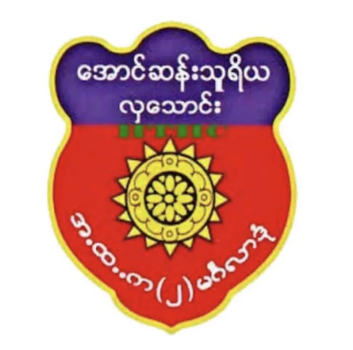
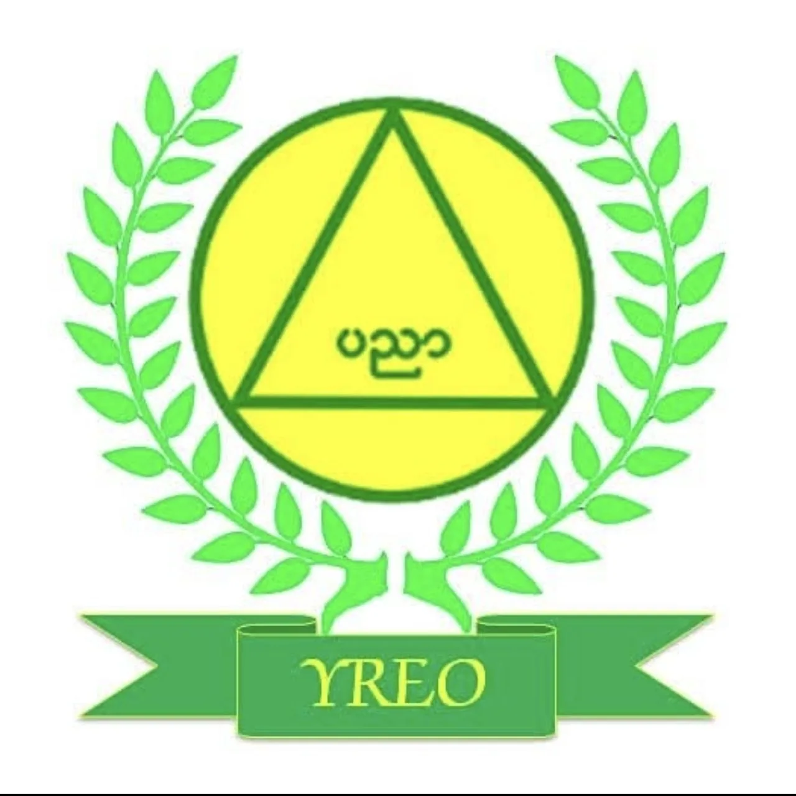
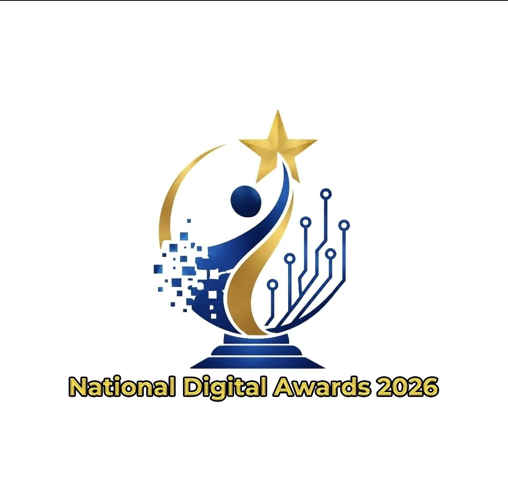
The environment is all around us. Explore the living and non-living parts of our world and the balance they create.
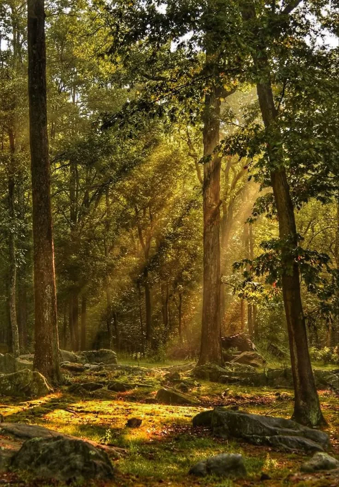
The world around us +The environment consists of living things, including humans, animals, and plants, as well as non-living things such as mountains, water, and the air we breathe.
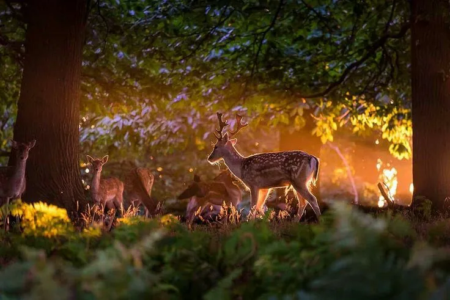
A home for life +It provides essential resources for living things, including food, shelter, habitats, and minerals.
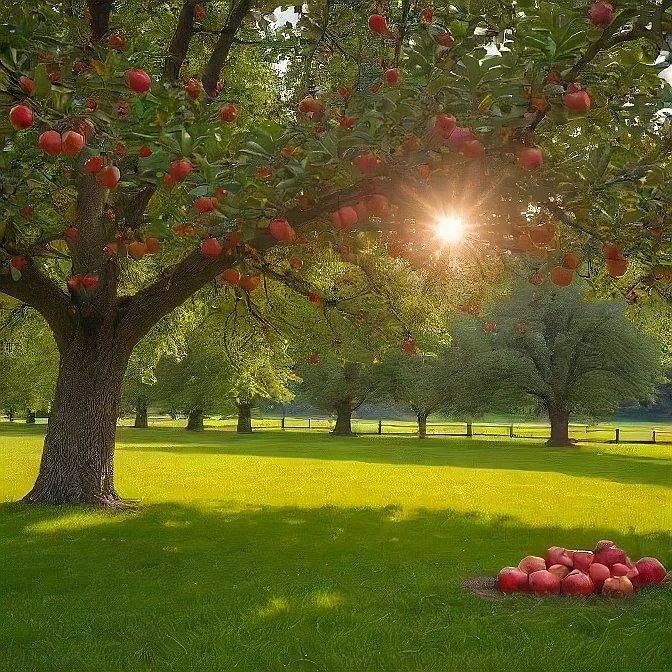
A delicate balance +Healthy ecosystems help maintain the natural world and protect the balance of our planet.
Select an image to learn more
From the air we breathe to the places wildlife calls home, the natural world supports every part of life.
Clean air, fresh water, fertile soil, and food support our daily needs and help sustain life on Earth.
Natural systems influence temperatures, rainfall, and weather patterns. A stable climate supports agriculture and living things.
Forests, rivers, and other habitats give plants and animals places to live, grow, and reproduce.
Our choices can leave lasting marks on land, water, and air. Understanding the damage is the first step toward change.
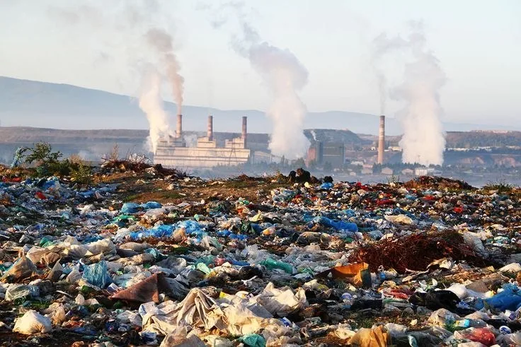
Litter, plastic waste, pesticides, and other chemicals can pollute soil and harm the places where plants and animals live.
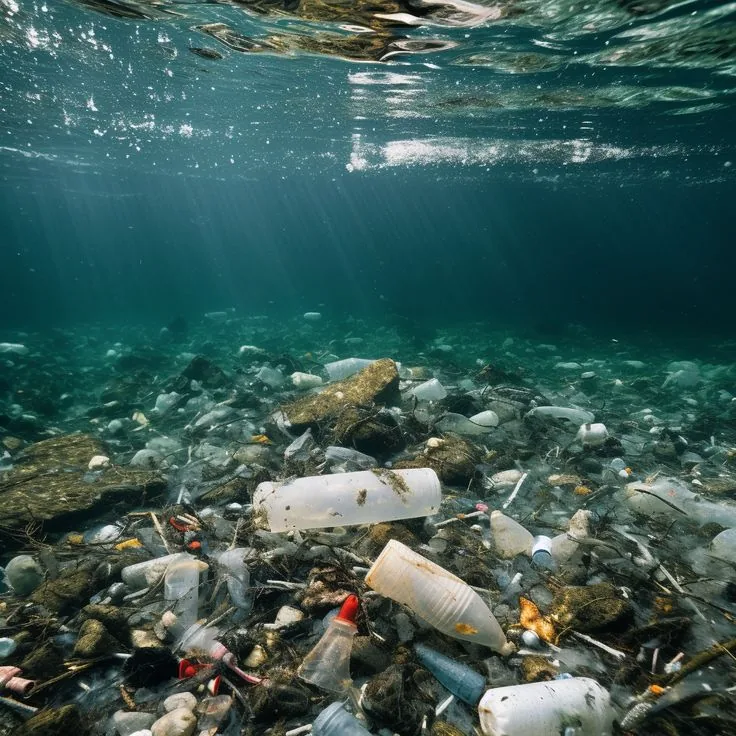
Rubbish thrown into rivers and oceans, along with oil spills, damages water resources and threatens aquatic life.
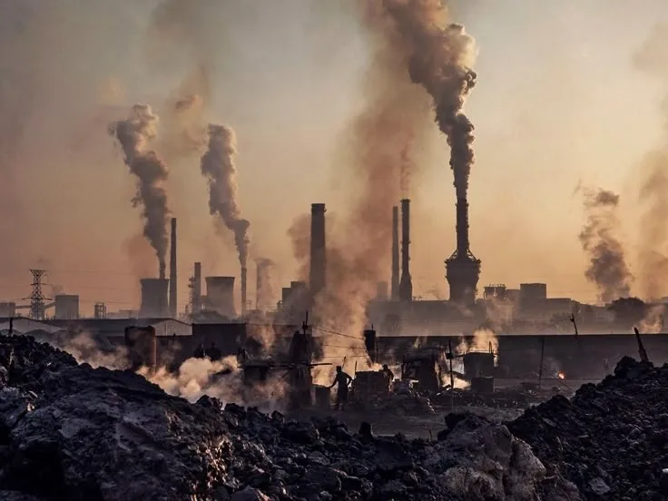
Air pollution affects the atmosphere we depend on. Protecting trees and reducing harmful emissions helps keep air cleaner.
At Aung San Thuriya Hla Taung High School, students turn care for the environment into everyday action.
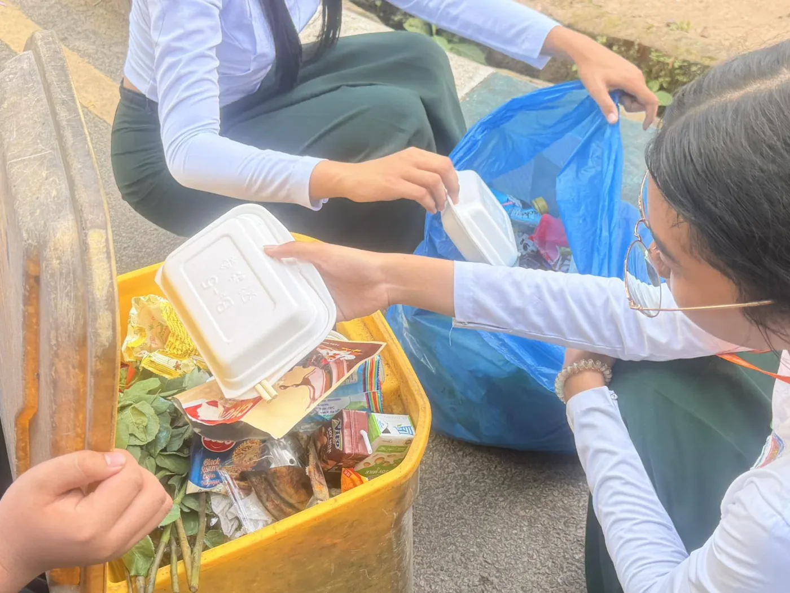
01 / LANDProtect our land↗Our school follows the 3Rs: reduce, reuse, and recycle. Separate bins for plastic, dry leaves, and other rubbish make waste sorting easier. Environmental posters remind students to dispose of waste properly and work together for a cleaner school.
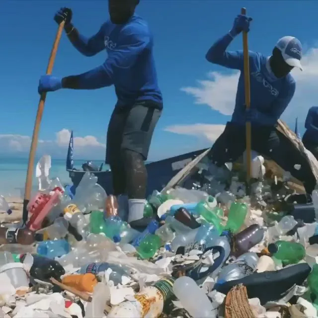
02 / WATERProtect our water↗Students regularly clean the school's drains to prevent blockages. Teachers explain the value of clean water, and students are encouraged to protect water resources at school and in daily life.
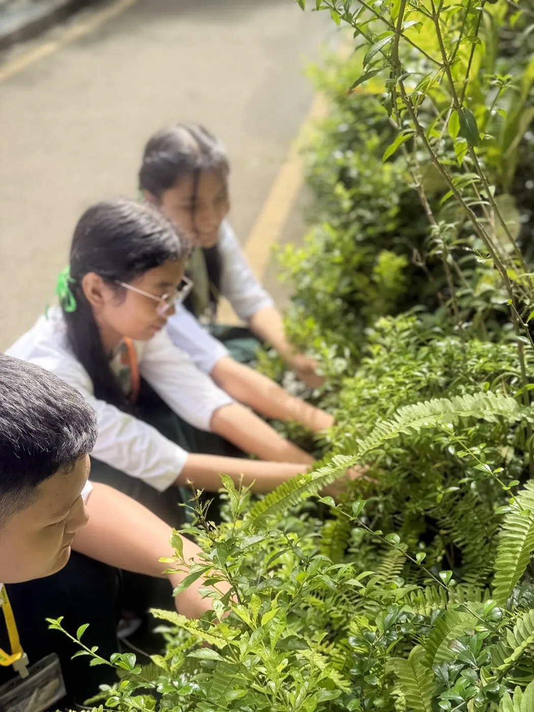
03 / AIRProtect our air↗Students plant and care for trees around the school. These activities teach the importance of trees, forest protection, and reducing air pollution for a greener future.
Select a card to see what our school is doing
A shared project, shaped by individual contributions and a common care for the planet.
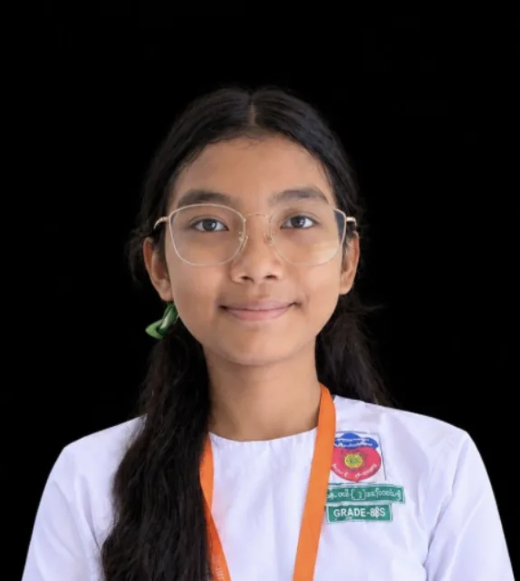
The main presenter, responsible for the human actions and environment topics. She worked with her teammates to bring the project together.
Focused on the advantages of the environment and ways to protect it, while contributing to the group's shared work.
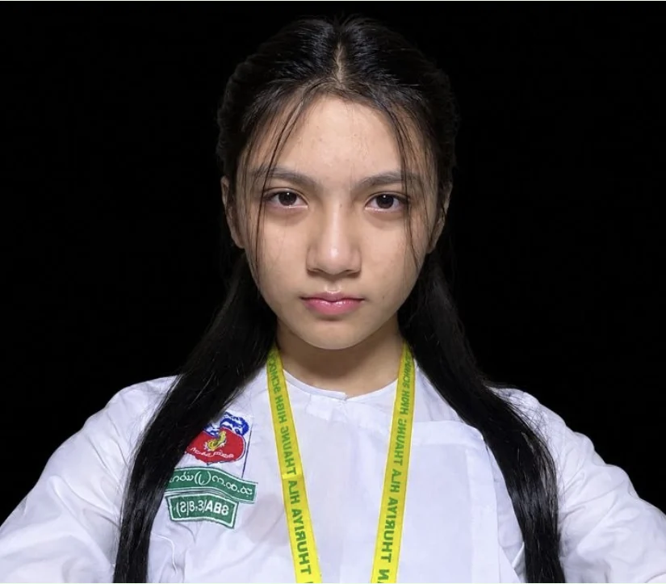
Responsible for coding and programming, particularly designing and developing the website.
Eight quick questions about our world and the ways we can care for it.
Continue exploring environmental protection, wildlife, and visual inspiration.